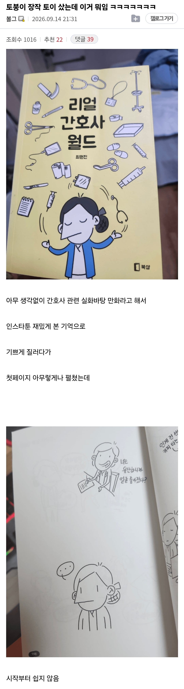

첫페부터 쉽지 않은 간호사 만화책..jpg
댓글
간호사 업계에는 에이지 오브 코난의 법도가 필요하다.
"문명인은 예의없는 말을 해도 대가리가 쪼개지지 않기 때문에 야만인보다 무례하다"
저거는 그냥 칼부림당해도 할말 없겠는데? 칼부림이 날만한데 저건?
저게 일반적인거면.. 간호사들 싸패 집단 아님?
내 지인이 간호사인데 진짜 저럼 ㄹㅇ...
진짜 저런다고?
입구컷도 낮지 않은데 왤케 병신 집단이 되었을까?

간호사 업계에는 에이지 오브 코난의 법도가 필요하다.
"문명인은 예의없는 말을 해도 대가리가 쪼개지지 않기 때문에 야만인보다 무례하다"
저거는 그냥 칼부림당해도 할말 없겠는데? 칼부림이 날만한데 저건?
저게 일반적인거면.. 간호사들 싸패 집단 아님?
내 지인이 간호사인데 진짜 저럼 ㄹㅇ...
진짜 저런다고?
입구컷도 낮지 않은데 왤케 병신 집단이 되었을까?
간호사 비문학